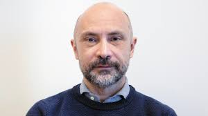
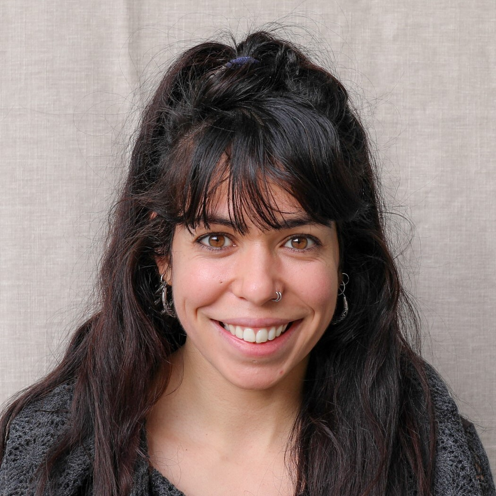
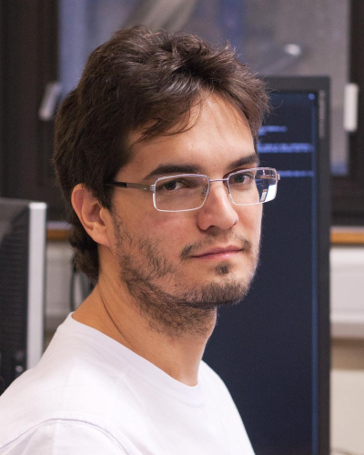

About
We will gather speakers from different parts of the world to present informally their current research in a two-day programme. The event is open to the public — everyone is welcome.
The meeting will be held in the auditorium of the Brain Institute — UFRN — in August (specific dates to be confirmed). The atmosphere will be informal and friendly. We will also be selecting talks from local researchers; if you would like to propose one please write to propose@potineuro.ufrn.br.
Schedule (provisional)
DAY 1
- 10:00 Talk 1
- 11:00 Talk 2
- 12:00 Break
- 14:00 Talk 3
- 15:00 Talk 4
DAY 2
- 10:00 Talk 1
- 11:00 Talk 2
- 12:00 Break
- 14:00 Talk 3
- 15:00 Talk 4
Confirmed speakers


